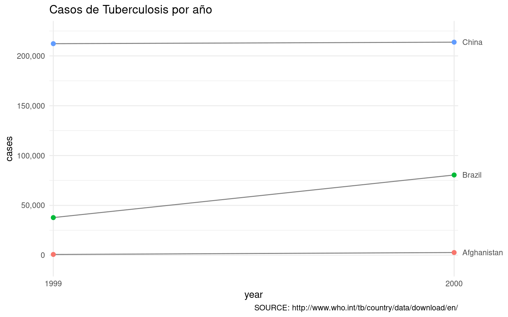

Capítulo 1 Introducción a R y visualización de datos
Paquetes para este capítulo
Para poder ejecutar en tu ordenador el código de los ejemplos y ejercicios de este capítulo vas a necesitar los paquetes siguientes. Te recomiendo que abras un script de R, pegues estas líneas al principio y las ejecutes (CNTRL + ENTER para ejecutar linea a linea).
if (!require('cowplot')) install.packages('cowplot'); library('cowplot')
if (!require('dplyr')) install.packages('dplyr'); library('dplyr')
if (!require('esquisse')) install.packages('esquisse'); library('esquisse')
if (!require('gapminder')) install.packages('gapminder'); library('gapminder')
if (!require('geomtextpath')) install.packages('geomtextpath'); library('geomtextpath')
if (!require('gghighlight')) install.packages('gghighlight'); library('gghighlight')
if (!require('ggplot2')) install.packages('ggplot2'); library('ggplot2')
if (!require('ggthemes')) install.packages('ggthemes'); library('ggthemes')
if (!require('ggridges')) install.packages('ggridges'); library('ggridges')
if (!require('knitr')) install.packages('knitr'); library('knitr')
if (!require('plotly')) install.packages('plotly'); library('plotly')
if (!require('purrr')) install.packages('purrr'); library('purrr')
if (!require('readr')) install.packages('readr'); library('readr')
if (!require('sjPlot')) install.packages('sjPlot'); library('sjPlot')
if (!require('tidyr')) install.packages('tidyr'); library('tidyr')
if (!require('raincloudplots')) remotes::install_github('jorvlan/raincloudplots'); library('raincloudplots')1.1 Introducción: porque la visualización de datos es importante
“These 13 datasets (the Datasaurus, plus 12 others) each have the same summary statistics (x/y mean, x/y standard deviation, and Pearson’s correlation) to two decimal places, while being drastically different in appearance.” (Matejka, J., & Fitzmaurice, G., 2017)

1.1.1 Ejemplo del mundo real: ¿cuantos temas deberia estudiar?
Este ejemplo viene de un experimento que realizamos junto con Carlos Santamaría hace algún tiempo. Presentamos una tarea sobre cálculo de probabilidades a personas que estaban entrando a un examen para convertirse en trabajadores del estado. Simplificando algo, digamos que la materia para el examen eran 80 temas. No es posible estudiar con profundidad todos los temas, así que los opositores se concentraban en un subconjunto de esos temas (e.g. 30 de 80). Al empezar el examen, se seleccionaban al azar 5 de los 80 temas, y cada persona elegía uno de ellos para desarrollar.
Abajo se puede ver como cambia la probabilidad de que uno de los temas estudiados aparezca dentro de los 5 seleccionados al azar. Con 30 de los 80 temas estudiados, la probabilidad de que uno de ellos salga en la prueba es del 91%. Si estudiáramos 47, subiríamos a una probabilidad del 99%.
En el experimento le preguntamos a las personas por la probabilidad de que les apareciera alguno de los temas estudiados en la prueba. Comparamos las siguientes dos preguntas:
- ¿Cuál es la probabilidad de que salga uno de los temas que has estudiado?
- ¿Cuál es la probabilidad de que no salga ninguno de los temas que has estudiado?
Miramos el error promedio en función de la pregunta (cuanto se han alejado de la probabilidad correcta), y vimos que nuestra manipulación había tenido un efecto considerable:
| Question | Error_promedio | SD | N |
|---|---|---|---|
| p (no salga ninguno) | 4.016129 | 35.82469 | 31 |
| p (salga uno) | -30.741936 | 20.01494 | 31 |
Hay una diferencia notable entre condiciones. Pasamos de un error promedio del -30.7% a tan solo 4%, simplemente cambiando la pregunta. Hagamos un sencillo análisis de regresión para ver si la diferencia es significativa, y cuanta varianza explica nuestro modelo.
| Error | |||
|---|---|---|---|
| Predictors | Estimates | CI | p |
| (Intercept) | 4.02 | -6.41 – 14.44 | 0.444 |
| Question [p (salga uno)] | -34.76 | -49.50 – -20.02 | <0.001 |
| Observations | 62 | ||
| R2 / R2 adjusted | 0.270 / 0.258 | ||

##
## Shapiro-Wilk normality test
##
## data: modelo_regresion$residuals
## W = 0.96215, p-value = 0.0532
Todo es hermoso. Tenemos un efecto claramente significativo de la pregunta (y con un R2-ajustado de .258, no está nada mal), y además, nuestro modelo no incumple el supuesto de normalidad de residuos (por los pelos!). Léeme 
Las pruebas de normalidad son muy sensibles al n de la muestra
Preparamos un plot con promedios y barras con error standard para nuestro paper.
Estamos listos para escribir el paper. Preparemos la tabla con descriptivos…
| Question | Error_promedio | SD | N |
|---|---|---|---|
| p (no salga ninguno) | 4.016129 | 35.82469 | 31 |
| p (salga uno) | -30.741936 | 20.01494 | 31 |
Es curioso que la desviación estandard sea mayor en el grupo con menos error promedio… Visualicemos las respuestas de todos los participantes, junto con la distribución de los datos.

Como se puede apreciar en la gráfica, cuando usamos la pregunta ¿Cuál es la probabilidad de que no salga ninguno de los temas que has estudiado? no estamos reduciendo el error, sino convirtiendo una distribución de respuestas unimodal en bimodal.
TLDR: La manera en la visualizamos la información determina las conclusiones a las que llegamos. En una sola gráfica:


1.2 Por qué R?
R es uno de los programas para data science mas populares, especialmente usado en la academia. El numero de paquetes que ofrecen funcionalidades de todo tipo no ha dejado de crecer. En 2022 el numero de paquetes en R-cran ha superado los 20,000 (ver este buscador de paquetes), y el ritmo de crecimiento nos acerca a la singularidad… ;)
Además de lo anterior, R es un programa de código abierto (algo esencial para poder hacer ciencia reproducible), con una comunidad de usuarios muy acogedora, y con un importante foco en la inclusividad.
La importancia de la comunidad es difícil de apreciar. Por ejemplo, es relativamente habitual que uno abra un issue en Github pidiendo una nueva característica en un paquete, y que los creadores la implementen (e.g. correlation, gtsummary, rorcid), que uno reporte un error y lo corrijan (e.g. sjPlot, gtsummary), recibir correcciones y mejoras en tus repositorios (e.g. html2latex, 2019-Chile), o poder contribuir a repositorios de otros (e.g. jsPsych, gtsummary).
Sus funciones de visualización son muy potentes (ver la r-graph-gallery para algunos ejemplos), siendo usadas como herramienta principal en medios como la BBC.

SOURCE: BBC
No menos importante, hay una gran cantidad de cursos, tutoriales, presentaciones y libros de una calidad excelente, con los que podemos aprender de manera autónoma. Por ejemplo:
- psyTeachR team at the University of Glasgow
- A Gentle Guide to the Grammar of Graphics with ggplot2
- resulumit.com Rmd workshop
- R for Data Science
- Advanced R
Para ver una compilación de todos los libros disponibles: Big Book of R
Con R puedes recoger datos interactivamente con shiny, preparar datos (o extraerlos de paginas web con rvest o RSelenium), visualizar datos estáticos con ggplot, animarlos con gganimate, visualizarlos con interactivamente con plotly o shiny. Puedes también analizar los datos con todas las técnicas imaginables, desde anovas con afex a modelos mixtos con lmer y/o afex, pasando por meta-análisis con metafor, SEM, Path analysis, mediación, con lavaan, análisis Bayesianos con brms o bayesfactor, y un larguísimo etc. Puedes llevar tus visualizaciones y análisis a reportes automáticos en múltiples formatos (pdf, html, docx) con Rmarkdown, o quarto, crear libros como este con bookdown, páginas web con blogdown o distill, e incluso papers completamente reproducibles (preparación y análisis de datos) en formato APA con papaja.
1.2.1 Bienvenida al tidyverse

El tidyverse es un conjunto de paquetes que nos permitirán hacer de manera (habitualmente) intuitiva muchas tareas de preparación y visualización de datos.
1.2.1.1 Tidyverse vs Base R
Muchas de las funciones que existen en el Tidyverse tienen un equivalente en base-R (la instalación por defecto de R). El Tidyverse tiene ventajas y desventajas. La ventaja fundamental es que el código resulta (habitualmente) más fácil de leer, los nombres de las funciones son más intuitivos, y la forma de hacer las cosas tiene a ser consistente. La desventaja fundamental es que incrementamos el numero de dependencias (paquetes) de nuestro código.
Veamos un ejemplo extraído de aquí.
La misma operación con base-R o con tidyverse:
Filter rows with conditions evaluated within groups: iris flowers with maximum “Petal.Width” for each “Species”
Tidyverse
iris %>%
group_by(Species) %>%
filter(Petal.Width == max(Petal.Width))Base-R
# First operate in the data.frame by group (split-apply)
widest_petals <- by(iris,
INDICES = iris$Species,
FUN = function(x){
x[x$Petal.Width == max(x$Petal.Width), ]
})
# Then combine the results into a data.frame
do.call(rbind, widest_petals)## Sepal.Length Sepal.Width Petal.Length Petal.Width Species
## setosa 5.0 3.5 1.6 0.6 setosa
## versicolor 5.9 3.2 4.8 1.8 versicolor
## virginica.101 6.3 3.3 6.0 2.5 virginica
## virginica.110 7.2 3.6 6.1 2.5 virginica
## virginica.145 6.7 3.3 5.7 2.5 virginica1.2.2 Antes de empezar
Programar es muy difícil. Todos necesitamos ayuda. Contar con una comunidad robusta con la que compartir, preguntar, contribuir, ayuda muchísimo.

Hay algunos recursos que son imprescindibles. Nadie sabe como los antiguos podían programar antes de la llegada de Stackoverflow:
Google: avoid scientific notation R:
options(scipen=999)
Y otros recursos que resultan muy útiles:
Twitter! Por ejemplo:
 @thomas_mock (#TidyTuesday)
@thomas_mock (#TidyTuesday)
- @dataandme
- @rivaquiroga
- @RLadiesSantiago
Webs como R bloggers
1.2.3 R para visualización de datos
ggplot2 es el paquete por excelencia para visualización de datos. Su potencia va asociada a un nivel de complejidad considerable, hasta el punto que hay Cheat sheets oficiales, Cheat sheets buscables, y decenas de miles de preguntas en Stack Overflow.
1.2.3.1 Primeros pasos - con training wheels
Para empezar a usar ggplot sin tener que preocuparnos de su complejidad, podemos usar la función esquisse:::esquisser() del paquete esquisse. Esta nos permite usar la potencia de ggplot para explorar una base de datos de manera muy sencilla.

La manera fácil (1, 2, 3), usando esquisse:
# 1) Asegúrate que hemos instalado el paquete esquisse
if (!require('esquisse')) install.packages('esquisse'); library('esquisse')
# 2) Lanza el wizard esquisser
esquisse:::esquisser(iris)
# 3) Crea el gráfico que quieras, exporta el código...1.2.3.2 Aprendamos con Garrick
Garrick Aden-Buie ( @grrrck) ha creado una excelente introducción a ggplot2 y la gramática de gráficos. Os recomiendo revisarla para familiarizaros con las funcionalidades de ggplot.
1.3 Visualización de datos con ggplot2
1.3.1 Componentes de una gráfica
En esta sección vamos a ver algunos de los componentes que usaremos cuando visualicemos datos. Muchos de los ejemplos que usaremos vienen de R for data science.
Los ingredientes esenciales de una gráfica son:
- Aesthetic mappings (aes): Variables, colores, rellenos, formas, …
- Geoms (geom_): puntos, líneas, boxplots, …
- Facets (facet_): paneles con diferentes gráficos para cada nivel de una variable categórica, …
- Transformaciones estadísticas: calcular promedios, barras de error, …

1.3.2 Mi primera gráfica 1-2-3
Para crear una gráfica con ggplot, tenemos que indicar donde están nuestros datos, qué mostraremos en el eje x e y, además de que geometrias queremos (geoms). Usaremos + para sumar instrucciones, con una lógica de capas superpuestas.
Por ejemplo:
Indicamos los datos y coordenadas:
ggplot(data = mpg, aes(x = displ, y = hwy))Añadimos el
geomde puntos para mostrar la relación entre x e y:+ geom_point()Añadimos un segundo
geompara trazar una línea de tendencia:+ geom_smooth()

1.3.3 Aesthetic mappings
En aes() vamos a indicar las variables que queremos en los ejes x e y, el color de los puntos o líneas, el relleno de las barras, la forma de los puntos, el tipo de linea, la agrupación de los datos, etc.
- x: x = gdpPercap
- y: y = lifeExp
- color: color = continent; color = “red”; color = “#FAA627”
- fill: fill = continent; fill = “red”; fill = “#FAA627”
- alpha: alpha = continent; alpha = 0.2
- size: size = continent; size = 5
- shape: shape = continent; shape = 0 ver codigo de las distintas formas
- linetype: linetype = continent; linetype = “dashed”
- group: group = continent
1.3.3.1 x-y
Algo esencial es decirle a ggplot que queremos que aparezca en el eje x y en el eje y de nuestra gráfica.
Empezaremos usando los datos de gapminder. A ver que variables tenemos en el data-frame gapminder:
gapminder## # A tibble: 1,704 × 6
## country continent year lifeExp pop gdpPercap
## <fct> <fct> <int> <dbl> <int> <dbl>
## 1 Afghanistan Asia 1952 28.8 8425333 779.
## 2 Afghanistan Asia 1957 30.3 9240934 821.
## 3 Afghanistan Asia 1962 32.0 10267083 853.
## 4 Afghanistan Asia 1967 34.0 11537966 836.
## 5 Afghanistan Asia 1972 36.1 13079460 740.
## 6 Afghanistan Asia 1977 38.4 14880372 786.
## 7 Afghanistan Asia 1982 39.9 12881816 978.
## 8 Afghanistan Asia 1987 40.8 13867957 852.
## 9 Afghanistan Asia 1992 41.7 16317921 649.
## 10 Afghanistan Asia 1997 41.8 22227415 635.
## # … with 1,694 more rows
## # ℹ Use `print(n = ...)` to see more rowsVisualizamos la relación entre gdpPercap (eje x), y lifeExp (eje y):
ggplot(data = gapminder,
mapping = aes(x = gdpPercap, y = lifeExp)) +
geom_point()
Si respetamos el orden de las variables, podemos simplificar nuestro código, evitando el data = y mapping =.
Por ejemplo, podemos ver de nuevo la relación entre lifeExp y gdpPercap, invirtiendo los ejes.
ggplot(gapminder, aes(lifeExp, gdpPercap)) +
geom_point()

1.3.3.2 Color, alpha, size
Para asignar colores podemos usar nombres de colores en inglés, o algo llamado código HEX:
Escribe
colors()en la Consola de RStudio
Empecemos a cambiar parámetros de nuestro gráfico inicial:
# Gráfico inicial
ggplot(gapminder, aes(gdpPercap, lifeExp)) +
geom_point()
# Color "rojo" para los puntos
ggplot(gapminder, aes(gdpPercap, lifeExp)) +
geom_point(color = "red")
# Color en función de la variable 'continent'
ggplot(gapminder, aes(gdpPercap, lifeExp, color = continent)) +
geom_point()
# Color en función de la variable 'continent'
# Cambiamos el tamaño de los puntos a 2
ggplot(gapminder, aes(gdpPercap, lifeExp, color = continent, size = 2)) +
geom_point()
# Color en función de la variable 'continent'
# Cambiamos el tamaño de los puntos a 2
# Añadimos transparencia usando el parámetro 'alpha'
ggplot(gapminder, aes(gdpPercap, lifeExp, color = continent, size = 2, alpha = .1)) +
geom_point()
Ejercicios
Usando como base el plot del ejercicio anterior (GDP x población), ¿podrías hacer lo siguiente?
- Colorear los puntos por continente
- Tamaño del punto 4
- Alpha 0.5

Cada uno de los siguientes gráficos tiene un error. ¿Sabrias corregirlos?
Solucion:
color = continent debe ir dentro de aes()
ggplot(gapminder, aes(gdpPercap, pop), color = continent) +
geom_point(size = 4, alpha = .5)
Solución:
color = “blue” debe ir fuera de aes()
ggplot(gapminder, aes(gdpPercap, pop, color = "blue")) +
geom_point(size = 4, alpha = .5)
1.3.3.3 Shape
Códigos para las distintas formas:

En este ejemplo usamos la variable continent para que cada asignar una forma diferente a cada uno de los continentes.
ggplot(gapminder, aes(gdpPercap, lifeExp, shape = continent)) +
geom_point() 
1.3.3.4 Linetype
Códigos para los distintos estilos de linea:

Podemos definir directamente el tipo de línea que queremos en geom_line():
ggplot(gapminder, aes(year, lifeExp, color = continent)) +
stat_summary(fun = mean, geom = "line", linetype = "dashed")
O que el tipo de línea dependa de una variable:
ggplot(gapminder, aes(year, lifeExp, linetype = continent, color = continent)) +
stat_summary(fun = mean, geom = "line") 
1.4 Geoms
Una de las cosas más difíciles cuando nos enfrentamos a nuevos datos es elegir el método más efectivo para visualizarlos. Hay varios recursos interesantes sobre cómo elegir una gráfica. En esta sección veremos distintos tipos de geometría, o geoms_().
Algunos tipos de geoms
Para una lista exhaustiva ver el manual de ggplot2.

SOURCE: https://nbisweden.github.io/RaukR-2019/ggplot/presentation/ggplot_presentation_assets/geoms.png
{kind=link}
1.4.1 geom_point y geom_jitter
Si queremos un gráfico de dispersión o scatterplot, podemos usar el geom_point()
ggplot(mpg, aes(displ, hwy)) +
geom_point()
En algunos casos, tenemos muchos puntos que se superponen. Si usamos geom_jitter() la posición de los puntos cambia levemente de manera aleatoria para evitar superposiciones. Con las propiedades ´width´ y ´height´ podemos controlar cuando desplazamiento queremos horizontal y verticalmente.
ggplot(mpg, aes(displ, hwy)) +
geom_jitter()
1.4.2 geom_smooth
Podemos usar líneas de tendencia con geom_smooth(). El method por defecto es loess, pero podemos usar otros métodos (e.g. geom_smooth(method = "lm") para usar una regresión lineal).
Recuerda que las funciones que usamos (todo lo que contiene () e.g. geom_smooth()) tienen parámetros, que son instrucciones addicionales que nos permiten modificar como se comportan. Para ver que opciones tenemos, podemos ver la ayuda de las funciones : ?geom_smooth(), o poner el cursor encima y presionar F1 (ayuda).
# Linea de tendencia (default loess)
ggplot(gapminder, aes(gdpPercap, lifeExp)) +
geom_point() +
geom_smooth()
# Usamos lm
ggplot(gapminder, aes(gdpPercap, lifeExp)) +
geom_point() +
geom_smooth(method = "lm")
# Un smooth por cada clase
ggplot(gapminder, aes(gdpPercap, lifeExp, color = continent)) +
geom_point() +
geom_smooth()
# Coloreamos puntos pero mantenemos un solo smooth
ggplot(gapminder, aes(gdpPercap, lifeExp)) +
geom_point(aes(color = continent)) +
geom_smooth()
Ejercicios
Usando como base el plot de la sección Shape:
ggplot(gapminder, aes(gdpPercap, lifeExp, shape = continent)) +
geom_point()- Colorea los puntos por continente
- Muestra una línea de tendencia por continente (sin el intervalo de confianza)
- Haz que el tipo de línea cambie por continente
- Añade transparencia a los puntos para que las líneas destaquen

Ahora usando el data-frame mpg, intenta crear los 6 plots que se pueden ver más abajo.
Aquí tienes el plot base, para hacer mas fácil la tarea:
ggplot(mpg, aes(displ, hwy)) +
geom_point() +
theme_grey()
Además de generar uno a uno los 6 plots, serías capaz de generar la figura que se ve abajo? Esto es, un plot que incluye los 6 plots juntos.
Solucion para combinar plots:
En la sección Combinando gráficas veras un ejemplo del uso de la función cowplot::plot_grid()

1.4.3 geom_boxplot y geom_violin
Podemos crear diagramas de cajas (boxplots) con geom_boxplot o violines con geom_violin para visualizar como cambian los datos por grupo.
# Boxplot con fill
ggplot(gapminder, aes(continent, lifeExp, fill = continent)) +
geom_boxplot(alpha = .2)
# Violins
ggplot(gapminder, aes(continent, lifeExp, fill = continent)) +
geom_violin(alpha = .2)
# Combinamos ambos
ggplot(gapminder, aes(continent, lifeExp)) +
geom_boxplot(alpha = .2) +
geom_violin(alpha = .2, aes(fill = continent))
1.4.4 geom_histogram y geom_bar
Podemos usar histogramas geom_histogram() con variables continuas. Como puedes ver, ahora solo le pasamos una variable a aes()
ggplot(gapminder, aes(lifeExp)) +
geom_histogram()
O si tenemos variables categóricas, geom_bar().
ggplot(gapminder, aes(continent, fill = continent)) +
geom_bar(alpha = .6)
1.4.5 geom_density
Para visualizar distribuciones (cuando tenemos muchos datos), podemos usar geom_density().
# Density with fill and alpha
ggplot(gapminder, aes(lifeExp, fill = continent)) +
geom_density(alpha = .2)
Ejercicio
Añadiendo un parámetro a la gráfica de arriba, podemos transformarla en las versiones de abajo. ¿Podrías hacerlo? (recuerda que poníendote encima de geom_density() y tecleando F1 puedes ver la ayuda de la función).
ggplot(gapminder, aes(lifeExp, fill = continent)) +
geom_density(alpha = .2)
Solucion:
position = "stack" y position = "fill".


1.4.6 geom_density_ridges
Uno de mis geoms favoritos para comparar distribuciones es geom_density_ridges:
# geom_density_ridges
ggplot(gapminder, aes(lifeExp, continent, fill = continent)) +
ggridges::geom_density_ridges(alpha = .2)
Especialmente porque podemos incluir en el mismo gráfico información sobre distribuciones y puntos individuales.
# geom_density_ridges junto con raincloud points y histograma
ggplot(gapminder, aes(lifeExp, continent, fill = continent)) +
ggridges::geom_density_ridges(stat = "binline", bins = 20, scale = 0.95, draw_baseline = FALSE) +
ggridges::geom_density_ridges(jittered_points = TRUE, position = "raincloud", alpha = 0.7, scale = 0.9)
Ejercicios
Usando como base el plot de la seccion geom_histogram():
ggplot(gapminder, aes(lifeExp)) +
geom_histogram()- Colorea los histogramas por continente
- Sabrias hacer que no se amontonen unos continentes sobre otros? Necesitarás añadir transparencia para ver todos los datos
Solucion:
geom_histogram(position = "identity", alpha = .3).


Con el DF diamonds, crea el siguiente plot:
ggplot(diamonds, aes(cut))
Pista:
Tienes que usar el geom_bar() y el parámetro fill.

1.5 Facets
Cuando queremos separar en gráficos independientes distintas categorías dentro de nuestros datos, podemos usar facetas. Hay dos funciones para esto, facet_grid() y facet_wrap().
1.5.1 facet_grid
facet_grid(~ variable) nos devuelve una matriz simétrica de gráficas.
# Plot inicial
ggplot(gapminder, aes(gdpPercap, lifeExp, color = continent)) +
geom_point(alpha = .2)
# Un grafico para cada continente
## Tip: usamos guides(color = "none") para que no se vea la leyenda asociada a color
ggplot(gapminder, aes(gdpPercap, lifeExp, color = continent)) +
geom_point(alpha = .2) +
facet_grid(~ continent) +
guides(color = "none")
# Cambiamos ejes
ggplot(gapminder, aes(gdpPercap, lifeExp, color = continent)) +
geom_point(alpha = .2) +
facet_grid(continent ~ .) +
guides(color = "none")
# Añadimos una segunda variable
ggplot(gapminder, aes(gdpPercap, lifeExp, color = country)) +
geom_line(alpha = .2) +
facet_grid(continent ~ pop > 5000000) +
guides(color = "none")
1.5.2 facet_wrap
facet_wrap(~ variable) nos devuelve tantas facetas como niveles de la variable, pudiendo definir el número de filas y columnas que queremos.
# Plot base
ggplot(gapminder, aes(lifeExp, fill = continent)) +
geom_histogram(alpha = .5)
# Facetas por continente
## En 2 columnas
ggplot(gapminder, aes(lifeExp, fill = continent)) +
geom_histogram(alpha = .5) +
facet_wrap( ~ continent, ncol = 2) +
guides(fill = "none")
1.5.3 gghighlight y facet_wrap
Con la función gghighlight() podemos añadir una capa para facilitar la comparación de cada faceta con los datos completos.
ggplot(gapminder, aes(lifeExp, fill = continent)) +
geom_histogram(alpha = .5) +
facet_wrap( ~ continent, nrow = 1) +
guides(color = "none") +
gghighlight::gghighlight()
Ejercicios
Usando como base el plot siguiente:
ggplot(mpg, aes(displ, hwy)) +
geom_point()- Crea un panel para cada tipo de coche (
class) en una rejilla simétrica
- Crea un panel para cada tipo de coche (
class), mostrando paneles en 3 filas
Solucion:
facet_grid() permite crear rejullas simétricas de panekes, y el parámetro nrow de facet_wrap() nos ayuda con paneles con números de filas definidos.


1.6 Transformaciones estadísticas
ggplot2 nos permite hacer algunas transformaciones estadísticas al crear los gráficos. Para más detalles, ver r4ds.
1.6.1 stat_summary
Algunas funciones que podemos usar en los gráficos
- min(): mínimo
- max(): máximo
- mean(): media
- median(): mediana
- sd(): desviación estandar
Podemos usar funciones simples de manera directa. En este caso, mostramos un punto con la mediana, y barras que muestran el rango completo de los datos:
ggplot(gapminder, aes(continent, lifeExp)) +
stat_summary(
fun.min = min,
fun.max = max,
fun = median)
Si queremos usar funciones algo mas complejas, la sintaxis es algo diferente. En este caso mostramos media ± desviación estandar:
ggplot(gapminder, aes(continent, lifeExp)) +
stat_summary(
fun.min = function(x) mean(x) - sd(x),
fun.max = function(x) mean(x) + sd(x),
fun = mean)
1.6.2 Promedios por grupo
Lo interesante es que podemos añadir estas transformaciones estadísticas como una capa más en los gráficos. Así que, a este gráfico inicial…
ggplot(mpg) +
geom_jitter(aes(x = class, y = hwy), width = 0.2) +
theme_minimal()
Le podemos añadir el promedio por grupo:
ggplot(mpg, aes(x = class, y = hwy)) +
geom_jitter(width = 0.2) +
stat_summary(fun = mean, color = "red", geom = "point", size = 4, alpha = .7) +
theme_minimal()
Ejercicios
Cuando al plot A trato de añadirle líneas para cada class, me aparece algo como lo de B, porque tenemos varios puntos en cada nivel de displ.
plotA = ggplot(mpg, aes(displ, hwy, color = class)) +
geom_point() +
theme(legend.position = "bottom")
plotB = ggplot(mpg, aes(displ, hwy, color = class)) +
geom_point() +
geom_line() +
theme(legend.position = "bottom")
cowplot::plot_grid(plotA, plotB, labels = c("A", "B"))
Pero en realidad no quiero que las líneas pasen por todos los puntos, sino que muestren el promedio en cada nivel de displ para cada class de vehículo. ¿Podrías reproducir el gráfico de abajo?

Usando como base:
ggplot(gapminder, aes(country, lifeExp, color = continent)) +
stat_summary(...) +
facet_grid(...) +
theme(axis.text.x = element_blank()) # Eliminamos etiquetas de nombres de paises
Podrías crear este gráfico? Mostramos mediana ± sd para cada país, organizado por continente.

1.7 Personalización de gráficas
Habitualmente, un vez hemos creado la gráfica, querremos personalizar varias cosas, como las escalas, colores, estilos, título, etc.
1.7.1 Coordenadas
# Gráfico inicial
ggplot(gapminder, aes(continent)) +
geom_bar()
# coord_flip()
ggplot(gapminder, aes(continent)) +
geom_bar() +
coord_flip()
# coord_polar()
ggplot(gapminder, aes(continent)) +
geom_bar() +
coord_polar()
1.7.2 Scales
Usaremos las funciones que empiezan por scale_ para multitud de cosas, por ejemplo, cambiar las etiquetas de los ejes x o y:
# Grafico inicial
ggplot(gapminder, aes(gdpPercap, lifeExp, color = continent)) +
geom_point(alpha = .1) 
# Añadimos breaks en eje y
ggplot(gapminder, aes(gdpPercap, lifeExp, color = continent)) +
geom_point(alpha = .1) +
scale_y_continuous(breaks = seq(0, 100, 5))
# Definimos cuantos breaks queremos
ggplot(gapminder, aes(gdpPercap, lifeExp, color = continent)) +
geom_point(alpha = .1) +
scale_x_continuous(n.breaks = 20, guide = guide_axis(angle = 90)) +
scale_y_continuous(n.breaks = 20)
# Separador de miles y breaks en x
ggplot(gapminder, aes(gdpPercap, lifeExp, color = continent)) +
geom_point(alpha = .1) +
scale_y_continuous(breaks = seq(0, 100, 5)) +
scale_x_continuous(labels = scales::comma, n.breaks = 10)
# Formato de $ ($M)
ggplot(gapminder, aes(gdpPercap, lifeExp, color = continent)) +
geom_point(alpha = .1) +
scale_y_continuous(breaks = seq(0, 100, 5)) +
scale_x_continuous(labels = scales::dollar_format(prefix = "$", suffix = "M"),
breaks = seq(0, 100000, 20000))
# Escala log
ggplot(gapminder, aes(gdpPercap, lifeExp, color = continent)) +
geom_point(alpha = .1) +
scale_y_continuous(breaks = seq(0, 100, 5)) +
scale_x_log10(labels = scales::dollar_format(prefix = "$", suffix = "M"))
# Invertimos escala
ggplot(gapminder, aes(gdpPercap, lifeExp, color = continent)) +
geom_point(alpha = .1) +
scale_y_reverse()
# No mostramos el texto de los breaks de x
ggplot(gapminder, aes(gdpPercap, lifeExp, color = continent)) +
geom_point(alpha = .1) +
scale_y_reverse() +
theme(axis.text.x = element_blank())
# Porcentaje
ggplot(gapminder, aes(continent, ..prop.., group = 1)) +
geom_bar() +
scale_y_continuous(labels = scales::percent)
Usar eje secundario (derecho) para mostrar etiquetas:
gapminder_last = gapminder %>%
group_by(continent) %>%
filter(year == max(year)) %>%
summarize(lifeExp = mean(lifeExp))
ggplot(gapminder, aes(year, lifeExp, linetype = continent, color = continent)) +
stat_summary(fun = mean, geom = "line") +
scale_y_continuous(
limits = c(0, max(gapminder$lifeExp)),
expand = c(0,0),
sec.axis = dup_axis(
breaks = gapminder_last$lifeExp,
labels = gapminder_last$continent,
name = NULL)) +
scale_x_continuous(expand = c(0,0)) +
guides(color = "none",
linetype = "none")
Usar {geomtextpath} para ubicar las etiquetas en el camino de las líneas:
# https://allancameron.github.io/geomtextpath/
ggplot(gapminder, aes(year, lifeExp, linetype = continent, color = continent)) +
geomtextpath::geom_labelsmooth(aes(label = continent), text_smoothing = 30,
method = "loess", formula = y ~ x,
size = 3, linewidth = 1, boxlinewidth = 0.3) +
scale_x_continuous(expand = c(0,0)) +
guides(color = "none",
linetype = "none")
Ejercicio
El plot del panel (A) tiene varios problemas:
- los años no son enteros o factores
- los casos no se muestran con un separador de miles
- la leyenda esta a la derecha ocupado un espacio precioso, …
Usando el plot base (A):
ggplot(table1, aes(year, cases)) +
geom_line(aes(group = country), colour = "grey50") +
geom_point(aes(colour = country))Trata de resolver los problemas e intenta llegar al resultado que se ve en el panel (B).
Soluciones:
- as.factor(VARIABLE): convierte una variable en categórica -
scale_x_discrete(expand = c(.05, 0)) nos ayuda a posicionar los niveles de year cerca de los extremos de la gráfica.

Si te sobra tiempo, puedes tratar de reproducir la siguiente versión mejorada…

1.7.3 Colors and fill scales
Las funciones scale_color_, scale_fill_ nos sirven para hacer cambios globales en los colores o rellenos de las gráficas. Algunos ejemplos:
# Plot inicial
ggplot(gapminder, aes(continent, lifeExp, fill = continent)) +
geom_violin(alpha = .2)
# Relleno usando paleta blues
ggplot(gapminder, aes(continent, lifeExp, fill = continent)) +
geom_violin(alpha = .2) +
scale_fill_brewer(palette = "Blues")
# Color grey
ggplot(iris, aes(Petal.Width, Petal.Length, color = Species)) +
geom_point() +
scale_color_grey(start = 0.2, end = 0.8, na.value = "red")
# Gradient
ggplot(iris, aes(Petal.Width, Petal.Length, color = Petal.Width)) +
geom_point() +
scale_color_gradient(low = "red", high = "blue")
# Gradient con un numero predefinidos de una paleta
ggplot(iris, aes(Petal.Width, Petal.Length, color = Petal.Width)) +
geom_point() +
scale_colour_gradientn(colours = terrain.colors(3))
Ejercicio
- Usando como base este plot, podrias cambiarle la paleta de color para usar una de las cualitativas?
Soluciones:
Ver sección Palettes de la ayuda de scale_fill_brewer()
ggplot(gapminder, aes(continent, lifeExp, fill = continent)) +
geom_violin(alpha = .2) +
scale_fill_brewer(palette = "Blues")
- Si intentamos asignar colores manualmente a los continentes de este modo, recibimos un error:
ggplot(gapminder, aes(gdpPercap, lifeExp)) +
geom_point(color = c("red", "grey", "green", "purple", "black"))
# Error: Aesthetics must be either length 1 or the same as the data (1704): colourPodrías resolver el error y mostrar el gráfico de abajo?
Soluciones:
Tenemos que:- indicar que el color depende de
continent- usar
scale_color_manual(), con el parámetro values para asignar los colores (ver ejemplos en la ayuda de la función)

1.7.4 Combinando gráficas
Con {cowplot} podemos combinar gráficas de manera muy simple. Otro paquete muy interesante es {patchwork}.
plot1 = ggplot(gapminder, aes(gdpPercap, lifeExp, color = continent)) +
geom_point(alpha = .1) +
scale_y_continuous(breaks = seq(0, 100, 5)) +
scale_x_log10(labels = scales::dollar_format(prefix = "$", suffix = "M")) +
theme(legend.position = "top")
plot2 = ggplot(gapminder, aes(continent, ..prop.., group = 1)) +
geom_bar() +
scale_y_continuous(labels = scales::percent) +
coord_flip()
cowplot::plot_grid(plot2, plot1, rel_widths = c(.3, 0.7))
Ejercicio
- Combina los dos plots del ejercicio anterior, con las siguientes modificaciones:
- Elimina las leyendas asociadas a colores y rellenos
- Usa la paleta “Accent” para los colores y rellenos
Soluciones:
- guides(fill = “none”) quita la leyenda asociada a fill… - scale_fill_brewer(palette = “Accent”) asigna la paleta “Accent” a los rellenos (
fill)

1.7.4.1 Combinando múltiples gráficas
Podemos combinar múltiples gráficas y llegar a hacer cosas mucho más complejas como combinar un scatteplot con un par de histogramas:
# Set up scatterplot
scatterplot <- ggplot(iris, aes(Sepal.Length, Sepal.Width, color = Species)) +
geom_point(size = 3, alpha = 0.6) +
guides(color = "none") +
theme(plot.margin = margin())
# Define marginal histogram
marginal_distribution <- function(x, var, group) {
ggplot(x, aes_string(x = var, fill = group)) +
geom_histogram(bins = 30, alpha = 0.4, position = "identity") +
# geom_density(alpha = 0.4, size = 0.1) +
guides(fill = "none") +
theme_void() +
theme(plot.margin = margin())
}
# Set up marginal histograms
x_hist <- marginal_distribution(iris, "Sepal.Length", "Species")
y_hist <- marginal_distribution(iris, "Sepal.Width", "Species") +
coord_flip()
# Align histograms with scatterplot
aligned_x_hist <- align_plots(x_hist, scatterplot, align = "v")[[1]]
aligned_y_hist <- align_plots(y_hist, scatterplot, align = "h")[[1]]
# Arrange plots
cowplot::plot_grid(
aligned_x_hist, NULL, scatterplot, aligned_y_hist,
ncol = 2, nrow = 2,
rel_heights = c(0.2, 1), rel_widths = c(1, 0.2)
)
1.7.5 Estilos
Los estilos nos permiten personalizar los gráficos de manera muy sencilla, por ejemplo, usando {ggtheme}. Podéis ver un tutorial aquí.
Primero creamos un gráfico sobre el que aplicaremos estilos.
p <- ggplot(iris, aes(Petal.Width, Petal.Length, color = Species)) +
geom_point() +
labs(title = 'A ggplot simple graph',
subtitle = 'Simple tweaks to improve plots, or not',
x = '',
y = '',
caption = 'https://github.com/gorkang / @gorkang') +
theme_gray() # This is the default. Needed here because of the Bookdown theme
pUsando el tema fivethirtyeight:
p +
ggthemes::scale_color_fivethirtyeight() +
ggthemes::theme_fivethirtyeight()
Usando el tema economist:
p +
ggthemes::scale_color_economist() +
ggthemes::theme_economist()
Ejercicios
Serías capaz de reproducir este gráfico, usando el dataframe diamonds y el theme_economist?
Gráfica inicial:
ggplot(diamonds, aes(price, cut, fill = cut, color = cut)) +
ggridges::geom_density_ridges(alpha = .6)
Soluciones:
- scale_x_log10() nos permite transformar el eje x a una escala logarítmica - Hay que aplicar un
ggthemes::scale_* para cada elemento: color, fill…

Serías capaz de reproducir este gráfico, usando el dataframe gapminder y la paleta Accent?
Gráfica inicial:
ggplot(gapminder, aes(gdpPercap, continent, fill = continent, color = continent)) +
ggridges::geom_density_ridges(alpha = .6)
Soluciones:
- scales::dollar_format() aplicado al parámetro labels de las funciones scale_x_* nos permite darle formato de moneda a las etiquetas de la escala x

1.8 Otras gráficas
Un tipo de gráfica genial para mostrar simultáneamente observaciones individuales, distribuciones, y cambios, es el raincloudplot.
# Transforma datos para adaptarlos a la estructura necesaria para raincloudplot
df_1x1 <- data_1x1(
array_1 = iris$Sepal.Length[1:50],
array_2 = iris$Sepal.Length[51:100],
jit_distance = .09,
jit_seed = 321)
# Crea raincloudplot
raincloud_1x1_repmes(
data = df_1x1,
colors = (c('dodgerblue', 'darkorange')),
fills = (c('dodgerblue', 'darkorange')),
line_color = 'gray',
line_alpha = .3,
size = 1,
alpha = .6,
align_clouds = FALSE) +
scale_x_continuous(breaks = c(1, 2),
labels = c("Pre", "Post"),
limits = c(0, 3)) +
xlab("Time") +
ylab("Score")
1.9 Visualización interactiva
El paquete {plotly} nos permite crear gráficas con algunos niveles de interactividad usando funciones propias, o modificando gráficas creadas con ggplot.
1.9.1 ggplots interactivos con plotly
Scatterplot creado con ggplot donde se puede ver el valor de los puntos, seleccionar áreas, etc.
plotly::ggplotly(
ggplot(gapminder %>% filter(year == 2007), aes(gdpPercap, lifeExp, color = continent, size = country)) +
geom_point(alpha = .3, point = 2) +
scale_y_continuous(breaks = seq(0, 100, 5)) +
scale_x_log10(labels = scales::dollar_format(prefix = "$", suffix = "M")) +
theme(legend.position = "none")
)1.9.2 Surface plots con plotly
Surface plot creado con plotly donde se muestra la relación entre 3 variables en un entorno interactivo 3D.
DF_RAW = structure(c(181, 163, 60, 124, 76, 62, 73, 59, 17, 21, 26, 7, 1, 2, 3,
188, 145, 61, 130, 61, 59, 62, 57, 20, 22, 22, 6, 4, 5, 5,
137, 154, 54, 191, 75, 56, 65, 56, 22, 27, 33, 14, 5, 5, 5,
126, 185, 65, 109, 51, 71, 57, 38, 25, 23, 21, 10, 5, 5, 5,
150, 144, 44, 123, 58, 24, 48, 41, 19, 26, 21, 5, 5, 5, 5,
138, 137, 61, 130, 67, 34, 60, 44, 19, 21, 16, 4, 5, 5, 5,
121, 146, 101, 92, 70, 74, 88, 33, 18, 39, 24, 12, 5, 5, 5,
100, 160, 129, 117, 70, 61, 42, 35, 22, 25, 21, 7, 10, 23, 8,
100, 129, 130, 107, 64, 61, 44, 25, 23, 30, 18, 11, 20, 58, 40,
100, 136, 131, 96, 53, 31, 51, 37, 43, 31, 19, 2, 22, 40, 41,
100, 124, 154, 74, 62, 44, 34, 15, 26, 23, 20, 6, 23, 10, 19,
100, 126, 251, 76, 73, 84, 47, 40, 32, 25, 32, 6, 13, 10, 13,
100, 129, 194, 91, 53, 99, 46, 34, 60, 21, 17, 6, 14, 14, 26,
100, 115, 119, 88, 64, 108, 37, 24, 49, 26, 17, 6, 15, 15, 47),
.Dim = 15:14,
.Dimnames = list(c("1", "2", "3", "4", "5", "6", "7", "8", "9", "10", "11", "12", "13", "14", "15"),
c("2006", "2007", "2008", "2009", "2010", "2011", "2012", "2013", "2014", "2015", "2016", "2017", "2018", "2019")))
DF = DF_RAW
plot1 = plotly::plot_ly(x = ~ colnames(DF),
y = ~ rownames(DF),
z = ~ DF) %>%
plotly::add_surface(name = "3D mesh",
connectgaps = TRUE, hidesurface = TRUE,
contours = list(
x = list(show = TRUE, width = 1, highlightwidth = 2, highlightcolor = "#41a7b3", highlight = TRUE),
y = list(show = TRUE, width = 1, highlightwidth = 2, highlightcolor = "#41a7b3", highlight = TRUE),
z = list(show = FALSE, width = 1, highlightwidth = 2, highlightcolor = "#41a7b3", highlight = FALSE)
)) %>%
plotly::add_surface(name = "surface",
connectgaps = FALSE,
contours = list(
x = list(show = F, width = 1, highlightwidth = 2, highlightcolor = "#41a7b3", highlight = TRUE),
y = list(show = F, width = 1, highlightwidth = 2, highlightcolor = "#41a7b3", highlight = TRUE),
z = list(show = FALSE, width = 1, highlightwidth = 2, highlightcolor = "#41a7b3", highlight = FALSE)
)
)
plot11.9.3 Animando gráficas con gganimate
{gganimate} nos permite crear ggplots añadiendo la dimensión temporal
if (!require('gganimate')) remotes::install_github('thomasp85/gganimate'); library('gganimate')
#sudo apt-get install ffmpeg
p = ggplot(gapminder, aes(gdpPercap, lifeExp, size = pop, colour = country)) +
geom_point(alpha = 0.7, show.legend = FALSE) +
scale_colour_manual(values = country_colors) +
scale_size(range = c(2, 12)) +
scale_x_log10() +
facet_wrap(~continent) +
# Here comes the gganimate specific bits
labs(title = 'Year: {frame_time}', x = 'GDP per capita', y = 'life expectancy') +
transition_time(year) +
ease_aes('linear')
# Create animated plot
animate(p, renderer = ffmpeg_renderer(), height = 6, width = 10, units = "in", res = 300)
# Save plot
# anim_save("name_file.mp4", animation = last_animation())Bibliografía
Matejka, J., & Fitzmaurice, G. (2017, May). Same stats, different graphs: Generating datasets with varied appearance and identical statistics through simulated annealing. In Proceedings of the 2017 CHI Conference on Human Factors in Computing Systems (pp. 1290-1294). ACM.
Garrick Aden-Buie. A Gentle Guide to the Grammar of Graphics with ggplot2: https://github.com/gadenbuie/gentle-ggplot2
Michael Toth. You Need to Start Branding Your Graphs. Here’s How, with ggplot!: https://michaeltoth.me/you-need-to-start-branding-your-graphs-heres-how-with-ggplot.html
Claus Wilke: https://wilkelab.org/practicalgg/
Thomas Lin Pedersen:
Big Book or R : https://www.bigbookofr.com/index.html